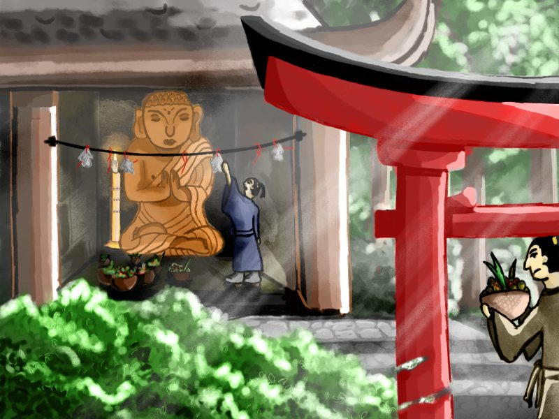

Inktober 2018 - J.28 : Cadeau, don
Publié le 28/10/2018 dans Dessin.
Le dessin du jour m’a pris plus de temps que d’habitude. J’ai essayé de travailler sur du noir et blanc, niveaux de gris, avant d’appliquer les claques de couleurs. Dur dur.
Voici une représentation de la tradition japonaise des omiyage.
Le principe original était le suivant : un membre du village récolte les offrandes de tous les villageois avant de se rendre seul au temple, où il prie pour tous. Afin de garantir sa visite et sa bonne foi, et d’apporter le réconfort aux villageois, il emporte du temple une petite amulette en papier pour chacun. Il s’agit d’un omiyage traditionnel. Aujourd’hui, les omiyage japonais s’apparentent plus à des cadeaux, des souvenirs de voyage.
